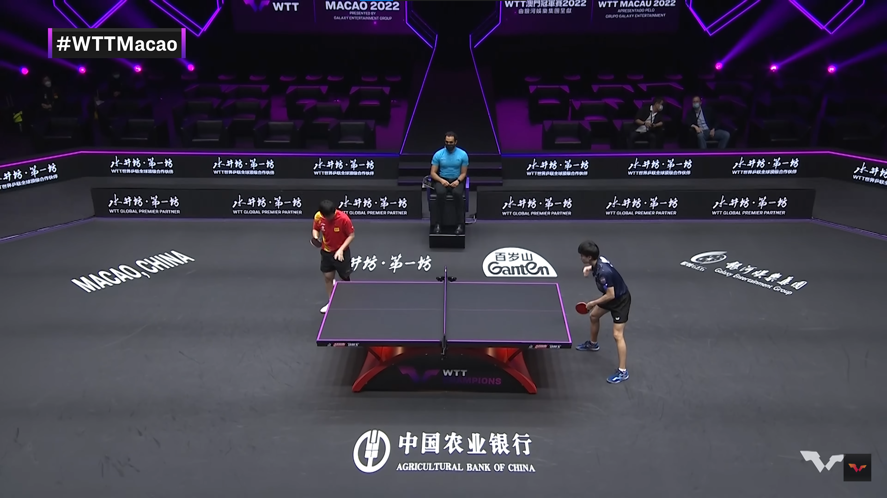

<!DOCTYPE html>
<html lang="en">

<head>
	<meta charset="UTF-8" />
	<meta http-equiv="X-UA-Compatible" content="IE=edge" />
	<meta name="viewport" content="width=device-width, initial-scale=1.0" />
	<title>Pitches</title>

	<!-- CSS only -->
	<link href="https://cdn.jsdelivr.net/npm/bootstrap@5.2.0/dist/css/bootstrap.min.css" rel="stylesheet"
		integrity="sha384-gH2yIJqKdNHPEq0n4Mqa/HGKIhSkIHeL5AyhkYV8i59U5AR6csBvApHHNl/vI1Bx" crossorigin="anonymous" />
	<!-- JavaScript Bundle with Popper -->
	<script src="https://cdn.jsdelivr.net/npm/bootstrap@5.2.0/dist/js/bootstrap.bundle.min.js"
		integrity="sha384-A3rJD856KowSb7dwlZdYEkO39Gagi7vIsF0jrRAoQmDKKtQBHUuLZ9AsSv4jD4Xa"
		crossorigin="anonymous"></script>
	<script src="lottie.js"></script>
	<script src="https://cdnjs.cloudflare.com/ajax/libs/bodymovin/5.9.6/lottie.min.js"></script>
	<script src="https://cdn.jsdelivr.net/npm/animejs@3.0.1/lib/anime.min.js"></script>
	<script src="https://cdnjs.cloudflare.com/ajax/libs/gsap/3.11.1/gsap.min.js"></script>
	<link href="//db.onlinewebfonts.com/c/c47f6a0433261050bfb52b5a9f1bccf4?family=PrometoW02-Md" rel="stylesheet"
		type="text/css" />
	<link href="//db.onlinewebfonts.com/c/bd5a0c3499990385372ad73715d19373?family=PrometoW02-Lt" rel="stylesheet"
		type="text/css" />
	<script src="https://code.jquery.com/jquery-3.6.1.js" integrity="sha256-3zlB5s2uwoUzrXK3BT7AX3FyvojsraNFxCc2vC/7pNI=" crossorigin="anonymous"></script>
</head>

<style>
	body {
		overflow: hidden;
	}
	@keyframes fadeDown {
		from {
			opacity: 0;
			transform: translateY(-10px);
		}

		to {
			opacity: 1;
			transform: translateY(0px);
		}
	}

	@keyframes animateLine {
		to {
			stroke: rgb(148, 236, 130);
		}
	}

	@keyframes fadeOut {
		100% { opacity: 1; }
		0% { opacity: 0; }
	}
	.fadeO {
		/* animation: fadeOut 1s; */
	}
	img {
		width: 15px;
		animation: fadeDown 500ms ease-out forwards;
	}

	#linesvg #poly {
		width: 1920px;
		height: 1080px;
	}

		#poly {
		stroke: rgb(255, 255, 255);
		/* filter: drop-shadow(10px 10px 200px #ff00ff); */
		fill: none;
		stroke-width: 1.5px;
		stroke-linecap: round;
		/* stroke-dashoffset: 100%; */
		stroke-dasharray: 0.7%;
		/* animation: animateLine 2s ease-out forwards; */
	}
		.ball, .count {
		height: 15px;
		width: 20px;
		background-color: rgb(255, 255, 255);
		border-radius: 50%;
		justify-content: center;
		align-items: center;
		display: flex;
	    margin: 0 auto;
		position:absolute;
		border: 3px solid #474747;
		box-shadow: 0.3px 3px 15px #CCC;

		/* perspective: 30%; */
	}
</style>

<body>
	<!--  -->
	<div>

	</div>
	<svg id="linesvg" viewBox="0 0 1920 1080">
		<polyline id="poly"></polyline>
	</svg>
	<canvas height="1080" width="1920"></canvas>

</body>

<script>
	nodecg.listenFor('Reload_All', ()=>{
            window.location.reload(true)
        })
	
		let PolyLine = document.getElementById("poly");
	var PitchesArray = []
	PitchesArray[1] = [0,0]
	var BallsContainer = document.querySelector('div')
	const PitchSize = nodecg.Replicant('PitchSize')
	PitchSize.on('change', value=>{
            PitchSize.value = value
        })
	const PitchNum = nodecg.Replicant('PitchNum')
	PitchNum.on('change', value=>{
			PitchNum.value = value
			console.log(value)
		})

	var Count = 0
	function removeFadeOut(el, speed) {
		var seconds = speed / 1000;
		el.style.transition = "opacity " + seconds + "s ease";

		el.style.opacity = 0;
		setTimeout(function () {
			el.parentNode.removeChild(el);
		}, speed);
	}

	nodecg.listenFor("showPitches", (value, ack) => {

		Count = Count + 1
		if (PitchesArray[0] == undefined) {
			PitchesArray[0] = value.pitch
		}

		RecentPitch = value.pitch;
		PitchesArray.unshift(value.pitch)
		
		// console.log(BallsContainer.firstElementChild)
		// console.log(Count)
		if (PolyLine.points.length >= PitchNum.value) {
			PolyLine.points.removeItem(PitchesArray.slice(-1))
			BallsContainer.removeChild(BallsContainer.firstElementChild)
			// console.log(BallsContainer.firstElementChild)
			// removeFadeOut(BallsContainer.firstElementChild, 1000);
			// BallsContainer.firstElementChild.classList.remove('ball')
			// gsap.fromTo(BallsContainer.firstElementChild,1,{opacity:1},{opacity:0})
			// BallsContainer.firstElementChild.style.transition = 'opacity 0s'
		}

		if (PitchesArray.length > 1) {
			p1 = PitchesArray[PitchesArray.length - 2]
			p2 = value
			// if (p1.side!=p2.side)
			// drawLine(p1.pitch,p2.pitch)
		}

		let newpoint = document.getElementById("linesvg").createSVGPoint();

		document.querySelector('div').innerHTML += `<span style="left:${RecentPitch[0] - 11}px; top:${RecentPitch[1] - 7}px" class="ball count${Count}"></span>`
		gsap.to('.ball', 2.5, { opacity: 1, scale: PitchSize.value, ease: Elastic.easeOut.config(1, 0.3) })
		const point = PolyLine.points.appendItem(newpoint);
		newpoint.x = PitchesArray[1][0];
		newpoint.y = PitchesArray[1][1];
		LineAnimation()
		lastBall = RecentPitch;
		
		function animatePoint(point) {
			return gsap.fromTo(point, {x: PitchesArray[1][0], y: PitchesArray[1][1]}, {x: PitchesArray[0][0], y: PitchesArray[0][1], duration: "0.5", ease: Power4.easeOut});
		}
		function LineAnimation() {
			animatePoint(point);
		}
	});

	nodecg.listenFor("clearPitches", (value, ack) => {
		PolyLine.points.clear();
		PitchesArray = []
		document.querySelector('div').innerHTML = ''
	});

</script>

</html>